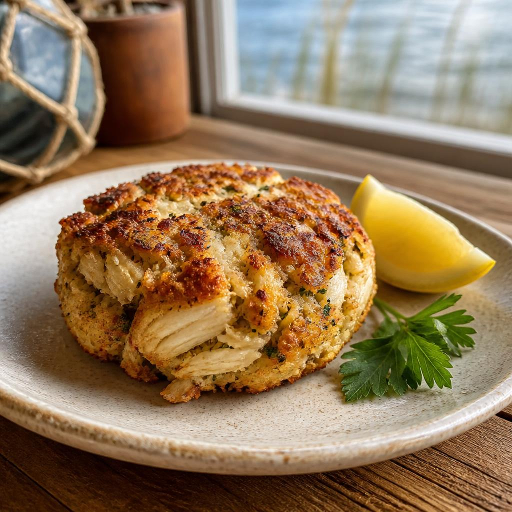

A small guide to a storied place
Meet me in
Frederick.
A little city with a long view: mountain air, old brick, and a table set with Chesapeake flavor. Here’s a good place to begin.
01 / At the table
Food

A Chesapeake classicMake room for a crab cake.
Maryland crab cakes are a regional favorite worth seeking out in Frederick. Expect sweet lump crab, a light hand with the filler, and a little Old Bay on the side.
Get to know the city02 / From your table
Dish gallery
Share a Maryland crab cake photo and see what Frederick is enjoying. Our inspector checks each photo before it appears. Photos are resized in your browser before upload.
No photos yet. Be the first to share a favorite.
03 / A little inspiration
Inspiration Grid
Unsplash inspiration for Frederick’s favorite dish. When exact matches aren’t available, we show related seafood photos—not necessarily taken in Frederick.
Loading food inspiration…
04 / The short version
Quick facts
-
The nickname
Clustered
Spires A familiar silhouette above downtown. - People in Frederick 92,059 U.S. Census Bureau estimate, July 1, 2025.
- Maryland statehood 1788 Maryland became the seventh state.
05 / State leadership
Leader
Governor of Maryland
Wes Moore
Executive
Office
06 / Listen for a song
State bird
Baltimore Oriole
Maryland’s state bird brings a flash of orange to the tree line. Tap the photo to say hello.
Go on, give it a tap07 / Your field notes
Things I like
Keep a little list of what catches your eye. It stays right here while this page is open.
Your list is ready when you are.
08 / Ask a local
Prompt Lab
Ask about Frederick and tune how the city guide answers. Your conversation stays in this page only.
Show the city guide’s system prompt
Loading the system prompt…